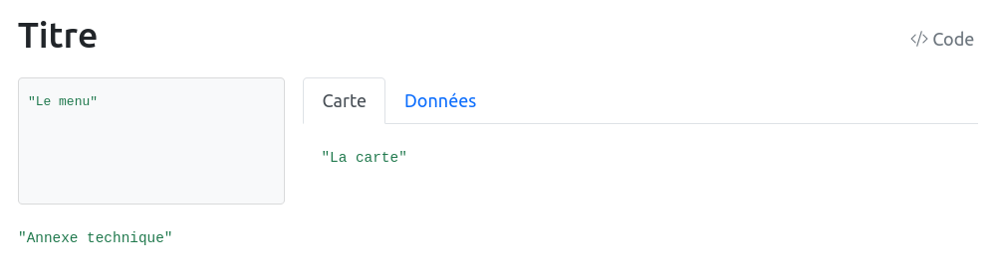

prez = FileAttachment("data/worldbank_meta.csv").csv()
Inputs.table(prez, { columns: [
"shortcode",
"indicator",
"indicator_desc",
],
header: {
shortcode: "id",
indicator: "indicateur",
indicator_desc: "description",
}})TP2 - Réaliser une application de cartographie interactive avec Quarto et bertin
L’objectif de ce TP est d’apprendre à créer des cartes interactives avec Quarto et la bibliothèque JavaScript bertin.

Responsables pédagogiques
Manhamady OUEDRAOGO (Burkina Faso) & Nicolas LAMBERT (France)
Ont participé à l’élaboration de ce module
Claude GRASLAND (France), Souleymane Sidi TRAORE (Mali), Malika MADELIN (France), Sébastien REY-COYREHOURCQ (France), Vakaramoko BAMBA (Côte d’Ivoire), Hugues PECOUT (France), Yentougle MOUTORE (Togo), Bénédicte GARNIER (France), Côomlan Charles HOUNTON (Bénin), Pauline GLUSKI (France)
Objectifs
Le but de ce TP est de réaliser une application de cartographie sur le monde sur une page web. Pour cela, nous nous basons sur un tableau de données contenant 6 variables issues de la banque mondiale, disponibles de 1990 à 2021. Elles ont été harmonisées par Claude Grasland.
1. Créer un document Quarto
Créez un document Quarto avec l’entête suivante :
---
title: "World Explorer"
format:
html:
echo: false
code-tools: true
page-layout: full
---Copiez et collez en dessous le code suivant :
```{ojs}
//| panel: sidebar
"Le menu"
```::: {.panel-tabset .ojs-track-layout}
## Carte```{ojs}
"La carte"
```## Données```{ojs}
"Les données"
```## Top 10```{ojs}
"le graphique"
```:::```{ojs}
"Annexe technique"
```Si vous cliquez sur Render (ou Ctrl+Shift+K), vous aurez le rendu suivant :

Il s’agit de la structure de votre application finale. Elle est composée de 5 parties :
- Le titre (défini dans l’entête de votre document
title: "World Explorer"). À vous de remplacer le titre par la chaine de caractère de votre choix. - Le menu (sur la gauche). C’est dans ce chunk que nous allons placer des
Inputspermettant à l’utilisateur d’interagir avec la carte. - La carte (sur la droite). C’est dans ce chunk que nous allons dessiner une carte avec la bibliothèque
bertin. - Les données (sur la droite). C’est dans ce chunk que nous allons afficher le tableau de données derrière la carte.
- Un graphique (sur la droite). C’est dans ce chunk que nous allons afficher un bar plot.
- Les annexes techniques (en bas). Dans ce chunk, on écrira tout ce qui est nécéssaire à l’élaboration de l’appli (import des données, etc, mais qu’on ne souhaite pas afficher). Rappelez-vous qu’avec Observable JavaScript, l’ordre d’écriture n’a pas d’importance. On peut donc écrire du code à la fin du document, comme une annexe technique.
NB: La carte et les données sont dans 2 onglets grace aux classes {.panel-tabset .ojs-track-layout}
- Sauvegardez.
2. Les données
Téléchargez les données et mettez-les dans un repertoire data.

Dans le chunck de l’annexe technique, importez les données géométriques et attributaires qui se trouvent dans le répertoire data.
world = FileAttachment("data/world.json").json()
stats = FileAttachment("data/worldbank_data.csv").csv()Comme dit précédement, les données contiennent des indacteurs à plusieurs dates.
4. Mise en forme des données
Avant de construire la carte, nous avons besoin de manipuler un peu les données en créant un tableau contenant uniquement l’année séléctionnée et en effectuant une jointure entre les données et le fond de carte. On effectue ces opérations dans la partie annexe technique. On a besoin de charger la bibliothèque bertin.
bertin = require("bertin@1.5.9")
statsyear = stats.filter(d => d.date == year)
data = bertin.merge(world, "id", statsyear, "iso3c")varmax = d3.max(stats.filter(d => d.date == 2019), d => +d[indicator])Après ces opérations, l’objet data contient les géométries et les données pour l’année séléctionnée.
5. Réalisation de la carte
Ici, on réalise la carte dans la chuck carte avec la bibliothèque bertin.
bertin.draw({
params: {projection: proj, clip: true },
layers:[
{type: "bubble", geojson: data, values: "POP",
fill: "red", dorling: true, fixmax: varmax, k,
tooltip: ["$name", "$region", d => Math.round(d.properties.POP / 1000000) + " millions d'hab."]},
{geojson: world, fill: "#CCC"},
{type: "graticule"},
{type: "outline"}
]})6. Affichage des données
Ici, on ajoute un tableau de données dans la chuck données.
Inputs.table(statsyear, { columns: [
"country",
"capital_city",
"region",
indicator
]})7. Réalisation du graphique
On souhaite réaliser un diagramme en barres avec les N pays qui ont les plus fortes valeurs sur l’indicateur séléctionné. Nous récupérons donc l’objet stats qui contient les données, nous le trions, et ne gardons que les N premières valeurs. N est défini dans un slider. Le graphique est réalisé avec la bibliothèqe Plot.
Ajoutez le code ci-dessous chuck graphique.
viewof nb = Inputs.range([5, 30], {label: "Nombre de pays représentés", step: 1})
top = data
.sort((a, b) => d3.descending(+a[indicator], +b[indicator]))
.slice(0, 20)
Plot.plot({
marks: [
Plot.barY(x, {
x: "iso3c",
y: indicator,
sort: { x: "y", reverse: true }
}),
Plot.ruleY([0])
]
})7. C’est fini !
Appuyez sur Render pour voir le résultat. La solution est disponible ici.